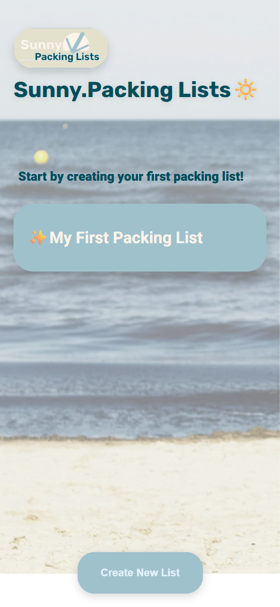
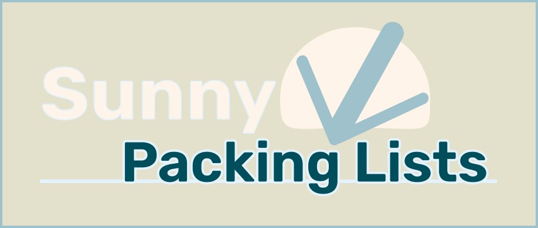

A smart travel packing app — weather-aware, category-driven, traveller-first
Pack once. Pack right. Let the weather decide the rest.
Every traveller has stood at a hotel wardrobe and thought: "I should have packed a sweater." The problem isn't forgetfulness — it's that packing happens at home, in a different climate, without real information about the destination.
Most packing apps are blank lists. They offer no intelligence about what you actually need for where you're going and when. The weather is the most critical variable in any packing decision — and it was completely absent from the apps available.
Sunny Packing Lists integrates a live 7-day weather forecast directly into the packing flow. Before you choose items, you know whether it will be sunny and 29°C, or rainy and 10°C. The weather is not a separate feature — it is part of the packing decision itself.
Beyond weather: categorised item picking (Essentials / Accessories / Baby / Clothing), custom item creation with notes, and the ability to copy items from previous lists — so each trip builds on the last rather than starting from zero.
The IA was designed around the natural sequence of a packing session: Orient → Create → Populate → Verify weather → Export.
Lists overview with "Create new list" CTA. All existing lists visible at a glance. Entry point for returning users.
Pick items from curated categories, create custom categories, and download the finalised list. Pack / Weather tab navigation.
Expandable category accordion (Essentials, Accessories, Baby, Clothing). Checkmark each item, add quantities. Your custom items appear in a separate section.
Integrated 7-day forecast for the destination. "Research Place" deep-link for local info. Today + Monday + Tuesday shown with high/low temperature and condition icons.
Custom item builder with Name and Comment fields. Two paths: select from Suggested Items library, or create from scratch. Items carry across future lists.
Every interaction was mapped on paper first — navigating between screens, unlocking new features, and discovering the edge case of "Copy items from another list" before any digital tool was opened.
5 screens in Figma — login/home, category selection, full packing list, weather integration — each mapped directly from the paper prototype flows.
The wireframes preserve the exact navigation logic from paper: top navigation uses Pack / Weather tabs rather than a conventional header menu. This keeps the two primary contexts — your list and your destination weather — always one tap apart.
Sage green (#c8cdb8) as the calm background system — a neutral that doesn't compete with the checkmarks and category colours. Teal (#006d6b) for all active states and primary actions. The light beige item rows create visual rhythm in long lists without visual noise.
The category accordion with a ▲ unlock indicator was the critical pattern. Categories that have items added show a ▼ (unlocked); empty categories show a △ (locked). Users never need to read a label — the shape communicates the state.
The first design instinct was to make weather a separate tab — a reference you check, then go back to packing. But usability testing of the paper prototype showed that users would check weather and then forget which items it implied before returning to the list.
The insight: weather is not context for packing — it IS a packing input. The Pack / Weather tab structure places them as equals. A user building their Clothing category can switch to Weather mid-thought, check the forecast, and return to the exact item they were adding.
A weather-aware packing app designed from first principles — paper prototype to digital wireframe — for the traveller who wants to leave without forgetting anything.
View Live Project